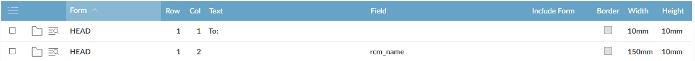

The information that is displayed on the document can be either the value of a database field or fixed text.
Add a separate field record for each database field and each bit of text on the document.

Anything that is to be printed on the same line must have the same row number. The columns indicate the order of items in the row. Different rows can have a different number of columns, and the columns can be of different widths.
The Text field prints text on the form. You can embed database fields in the Text box by adding { } either side of the field.
The Field field allows you to reference fields in the database or add the path of an image, see
The minimum height of a row is determined by the height of the first item on the row (other heights are ignored).
If you want column headings above the repeated (body) rows, include them at the bottom of the header section.
To show page numbers, use the tokens {page-number} and {page-count}. For example, enter a text record Page {page-number} of {page-count}.
If you want a logo to appear on the document, specify it on one of the Background fields of the Report Page Layout. The image will be aligned with the left-hand margin, so if you want the logo to be right-aligned, you need to add white space to the image itself.